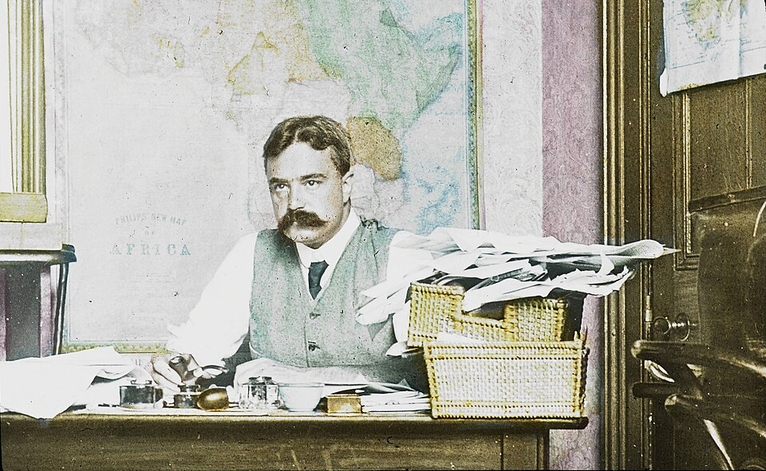
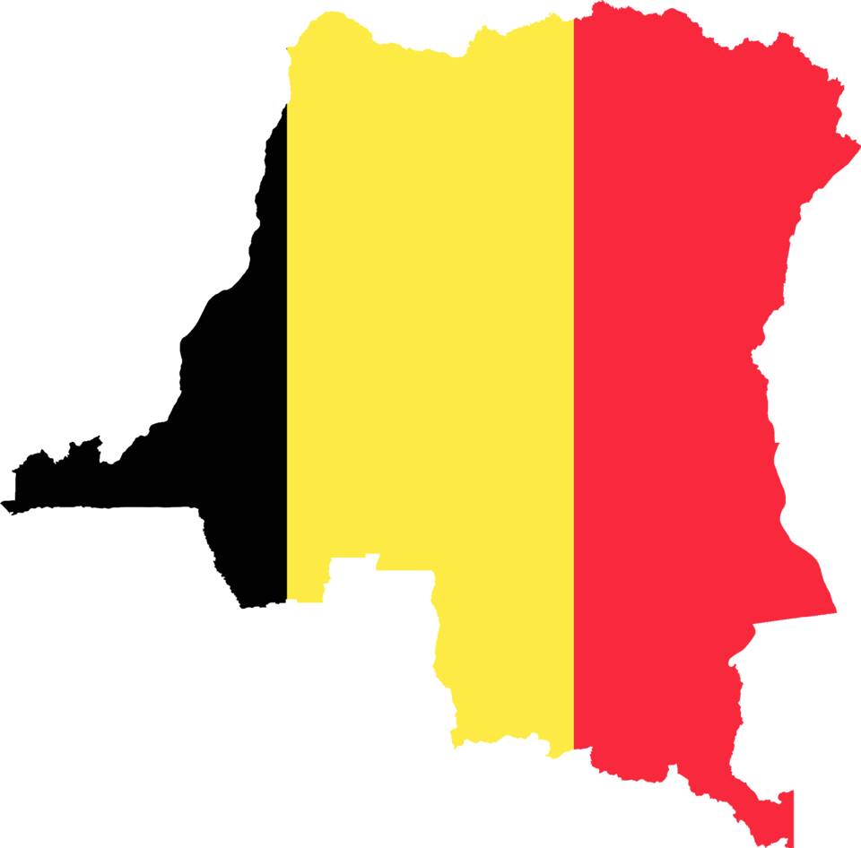

⏱️ 10초 카드 · 콩고 자유국 시대 (1873~1924)
콩고개혁협회장부첫 국제 인권 캠페인폭로
여는 질문 — '보는 것'과 '읽는 것'의 차이는 무엇일까?
이름
한국어E. D. 모렐
원어E. D. Morel
실제 발음에드먼드 딘 모렐
로마자Edmund Dene Morel
영어권E. D. Morel
왜 이 사람인가
이 도감 '폭로자 계보'의 대표예요. 총 한 자루 없이, 항만 장부의 숫자만으로 한 제국의 범죄를 세상에 드러냈죠. 레오폴드 2세 편을 읽었다면, 그 정반대편에 선 양심이 바로 모렐이에요.
생애
리버풀 해운회사의 평범한 직원이었어요. 콩고행 화물 기록을 보다가 이상한 점을 발견하죠 — 콩고에서 고무·상아가 쏟아져 들어오는데, 그 대가로 나가는 배에는 교역품이 아니라 총과 사슬뿐이었던 거예요. '대가 없이 나오는 산물 = 강제 노동'이라는 결론을 숫자만으로 끌어냈습니다.
회사가 침묵을 요구하자 사표를 내고 기자가 됐어요. 콩고개혁협회(1904)를 만들어 케이스먼트의 보고서, 선교사들의 증언과 사진을 모아 세계 여론을 움직였고 — 결국 1908년 레오폴드 2세의 손에서 콩고를 떼어 내는 데 결정적 역할을 했죠. 역사상 첫 국제 인권 캠페인으로 불려요.
1차대전 때는 비밀 외교를 비판하는 반전 운동으로 감옥까지 갔어요. 권력이 아니라 기록과 양심 편에 반복해서 섰던 사람 — '장부의 얼굴을 한 악'(벨기에 파일)을 장부로 잡아낸, 이 도감의 폭로자 계보의 대표예요.
자료로 보기 — 유묵·사진



남긴 말
“이것은 우리 세대가 목격한 가장 거대한 사기이자 악행이다.”
콩고 자유국의 실상을 한 문장으로 요약하며 — 그는 이것을 '제도'가 아니라 조직된 약탈로 봤어요. · 출처: E. D. 모렐, 〈붉은 고무(Red Rubber)〉(1906) 취지
“들어오는 것은 고무와 상아뿐인데, 나가는 배에는 총과 사슬뿐이었다. 그렇다면 그 산물은 무엇으로 산 것인가?”
그가 콩고의 진실을 깨달은 순간을 정리한 표현 — 숫자의 불균형 자체가 강제 노동의 증거였어요. · 출처: 모렐의 추론을 정리(전기 〈레오폴드 왕의 유령〉 기반)
연표
- 1873출생 (파리, 영국에서 성장)
- 1890s말항만 기록에서 콩고 수탈 간파
- 1904콩고개혁협회 설립 (케이스먼트와 함께)
- 1908콩고, 레오폴드의 손을 떠나다
- 1924사망
책상에서 콩고를 읽다
모렐은 콩고에 가 본 적이 없어요. 그는 '항만 사무실 책상'에서 콩고를 읽어 냈죠. 그의 눈이 머문 곳들을 따라가 봐요.
현재 지도 위 표시예요. 그가 한 번도 밟지 않은 콩고를, 숫자가 그에게 데려다 주었어요.
빛과 그림자총 한 자루 없이 한 제국의 범죄를 무너뜨린 빛 — 그림자라면, 당대의 그 역시 식민지 지배 자체를 부정하진 못한 시대의 한계가 있었다는 것. 그래도 '보이지 않는 사람들의 고통을 숫자에서 읽어 낸 눈'은 지금도 배울 가치가 있어요.
더 깊이 (고등·일반)
장부가 말한 진실
리버풀 해운회사의 평범한 직원이던 그는, 콩고행 화물 기록을 보다 이상한 점을 발견했어요. 콩고에서 고무·상아가 쏟아져 오는데 그 대가로 가는 건 교역품이 아니라 총과 사슬뿐. '대가 없이 나오는 산물 = 강제 노동'이라는 결론을 숫자만으로 끌어냈죠.
콩고개혁협회(1904)
회사가 침묵을 요구하자 그는 사표를 내고 기자가 됐어요. 콩고개혁협회를 만들어 영사 케이스먼트의 공식 보고서, 선교사들의 증언과 사진을 모아 세계 여론을 움직였죠.
첫 국제 인권 캠페인
집회·팸플릿·신문·환등기 사진 상영으로 수백만 명에게 콩고의 참상(강제 노동과 신체 절단 등)을 알렸어요. 국경을 넘어 조직된 이 운동은 흔히 '역사상 첫 국제 인권 캠페인'으로 불려요.
1908년, 콩고가 레오폴드의 손을 떠나다
여론의 압박 끝에 콩고는 레오폴드 2세 개인 소유에서 벨기에 정부의 식민지로 넘어갔어요. 한 사람의 양심과 끈질긴 기록이 한 왕의 사유지를 무너뜨린 거예요.
양심의 일관성
1차대전 때는 비밀 외교를 비판하는 반전 운동을 하다 감옥에 갇히기도 했어요. 권력이 아니라 기록과 양심 편에 반복해서 섰던 사람 — 그래서 더 믿음이 가는 폭로자예요.
더 공부하기 — 여기서 출발하세요
📚 책으로
- 레오폴드 왕의 유령 ↗ · 애덤 호크실드콩고의 비극과 모렐·케이스먼트의 폭로를 다룬 이 주제의 결정판.
📜 1차 사료
- 붉은 고무 (Red Rubber, 1906) ↗ · E. D. Morel그가 직접 쓴 콩고 고발서.
🎬 영상으로
- 다큐 — 레오폴드 2세와 콩고 식민지 ↗ · The People Profiles콩고의 비극과 모렐·케이스먼트의 폭로를 다룬 영어 다큐.
📍 가 볼 곳
- 리버풀 항 (영국)그가 장부를 읽어 진실을 발견한 도시.